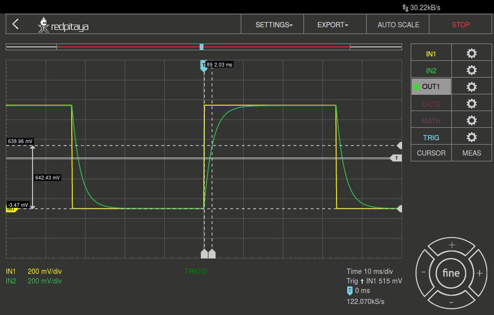
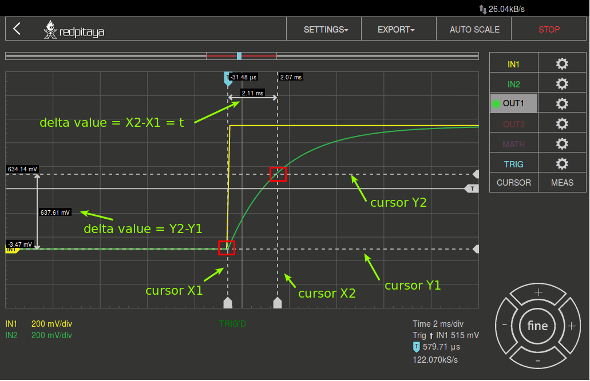
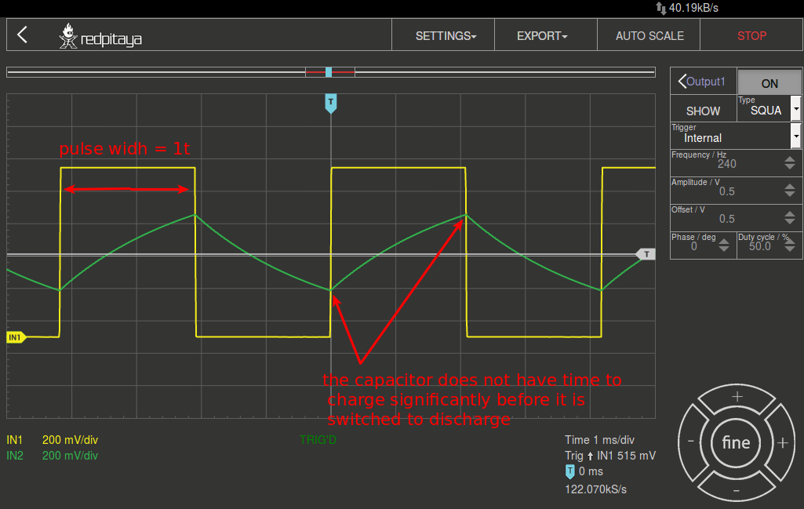

6. Transient Response der RC-Beschaltung¶
6.1. Zielsetzung¶
Das Ziel dieser Labortätigkeit ist es, das transiente Verhalten einer RC-Schaltung zu untersuchen und das Konzept der Zeitkonstante unter Verwendung von Pulswellenformen zu verstehen.
Bemerkung
In diesen Tutorials verwenden wir die Terminologie aus dem Benutzerhandbuch, wenn es um die Verbindungen zur Red Pitaya STEMlab-Board Hardware geht. Die Oszilloskop- und Signalgeneratoranwendung wird zum Erzeugen und Beobachten von Signalen auf der Schaltung verwendet.
6.2. Hintergrund¶
In dieser Labortätigkeit wenden Sie eine Pulswellenform auf die RC-Schaltung an, um das transiente Verhalten der Schaltung zu analysieren. Die Impulsbreite in Bezug auf die Zeitkonstante einer Schaltung bestimmt, wie sie von einer RC-Schaltung beeinflusst wird.
Zeitkonstante \(\tau\): Ein Maß für die Zeit, die für bestimmte Änderungen von Spannungen und Strömen in RC- und RL-Kreisen benötigt wird. Im Allgemeinen, wenn die verstrichene Zeit fünf Zeitkonstanten (\(5 \tau\)) nach dem Schalten überschreitet, haben die Ströme und Spannungen ihren Endwert erreicht, der auch als stationäre Reaktion bezeichnet wird (eingeschwungen).
Die Zeitkonstante einer RC-Schaltung ist das Produkt aus Ersatzkapazität und Thévenin-Widerstand, bezogen auf die Anschlüsse des Ersatzkondensators
Ein Impuls ist eine Spannung oder ein Strom, der von einem Niveau zum anderen und wieder zurück wechselt. Wenn die hohe Zeit einer Wellenform gleich ihrer niedrigen Zeit ist, wird sie als Rechteckwelle bezeichnet. Die Länge jedes Zyklus eines Impulses ist seine Periode \(T\).
Die Impulsbreite (\(t_p\)) einer idealen Rechteckwelle entspricht der Hälfte der Zeitspanne.
Das Verhältnis zwischen Impulsbreite und Frequenz wird dann durch,

Abb. 6.1 RC-Beschaltung der Serie.
Aus den Kirchhoffschen Gesetzen lässt sich nachweisen, dass die Ladespannung \(V_C(t)\) über dem Kondensator gegeben ist als:
wobei \(V\) die an die Schaltung angelegte Quellspannung für \(t=0\) mit Zeitkonstante \(RC=\tau\) ist. Die Ansprechkurve nimmt zu und ist in Abb. Abb. 6.2 dargestellt.
Abb. 6.2 Kondensatorladung für die RC-Beschaltung der Serie auf einen Schritt-Eingang mit Zeitachse normiert um \(tau\).
Die Entladungsspannung für den Kondensator wird durch die folgende Gleichung angegeben:
Dabei ist V0die im Kondensator gespeicherte Anfangsspannung bei t = 0 und RC = \(\tau\) die Zeitkonstante. Die Reaktionskurve ist eine abnehmende Exponentialfunktion, wie in Abbildung 3 dargestellt.

Abb. 6.3 Kondensatorentladung für die RC-Beschaltung der Serie RC
6.3. Materialien¶
Red Pitaya STEMlab 125-14 oder STEMlab 125-10
Widerstände: * \(2.2\,k\Omega\) , * \(10\,k\Omega\)
Kondensatoren: * \(1\,\mu F\), * \(0.01\,\mu F\)
6.4. Vorgehensweise¶
Bauen Sie die in Abbildung 4 dargestellte Schaltung auf Ihrer lötfreien Leiterplatte mit den Bauteilwerten \(R_1 = 2.2\,k\Omega\) und \(C_1 = 1\,\mu F\) auf.
Schließen Sie die Sonden des Oszilloskops und des Signalgenerators wie in Abb. 6.5 dargestellt an.
Stellen Sie die Oszilloskop-Dämpfung auf \(\times 1\) ein.

Abb. 6.4 Breadboard-Diagramm der RC-Schaltung \(R_1 = 2.2\, k\Omega\) und \(C_1 = 1\, \mu F\).

Abb. 6.5 Breadboard RC-Schaltung \(R_1 = 2.2\, k\Omega\) und \(C_1 = 1\, \mu F\).
Starten Sie die Anwendung Oszilloskop & Signalgenerator.
Im Einstellungsmenü OUT1 den DC-Offsetwert auf 0,5V und den Amplitudenwert auf 0,5V einstellen, um eine 1-V (peak-to-peak) Rechteckwelle mit einer Zentrierung von 0,5 V als Eingangsspannung für die Schaltung anzulegen. Wählen Sie aus dem Wellenform-Menü SQUARE-Signal, deaktivieren Sie die SHOW-Taste und wählen Sie enable.
Stellen Sie sicher, dass IN1 V/div und IN2 V/div beide auf 200mV/div eingestellt sind (Sie können V/div einstellen, indem Sie den gewünschten Kanal auswählen und vertikale +/- Regler verwenden).
Im Einstellungsmenü IN1 und IN2 den Wert des vertikalen Versatzes auf -500 mV einstellen.
Für die stabile Aufnahme stellen Sie den Triggerpegel im TRIGGER-Menü auf 0,5V und wählen Sie NORMAL.
Beobachten Sie das Verhalten der Schaltung in den folgenden drei Fällen und notieren Sie die Ergebnisse.
Impulsbreite größer als \(5 \tau\) (z.B. \(15 \tau\)): Stellen Sie die Frequenz des Ausgangs OUT1 so ein, dass der Kondensator bei jedem Zyklus der Rechteckwelle genügend Zeit zum vollständigen Laden und Entladen hat. Lassen Sie also die Impulsbreite 15 \(\tau\) betragen und stellen Sie die Frequenz nach Gl. Gl. 6.2 ein. Der von Ihnen gefundene Wert sollte etwa 15 Hz betragen.
Hinweis
Berechnen Sie die Frequenz von OUT1, so dass die Impulsbreite von OUT1 gleich dem Sollwert von \(x \cdot \tau\) nach Gl. 6.2 ist.
(6.5)¶\[f_out = \frac{1}{2 \cdot x \cdot \tau}\]Zum Beispiel: Wenn wir die Impulsbreite Ihres OUT1-Quadratsignals gleich \(5 \tau\) haben wollen.
(\(\tau\) - Zeitkonstante des RC-Kreises \(\tau\) = R * C)
(6.6)¶\[\tau &= R \cdot C & = 2.2\, k\Omega \cdot 1\,\mu F &= 2.2\, ms\](6.7)¶\[f_out &= \frac{1}{2 \cdot 5 \cdot \tau} &= \frac{1}{2 \cdot 5 \cdot 2.2\,ms} &= 45\,Hz\]Bestimmen Sie die Zeitkonstante aus den auf dem Bildschirm angezeigten Wellenformen, wenn möglich. Wenn Sie die Zeitkonstante nicht ohne weiteres erhalten können, erläutern Sie mögliche Gründe.
Zur Bestimmung der Zeitkonstante verwenden Sie die Option „CURSOR“.
Öffnen Sie das Menü CURSOR und wählen Sie alle vier Cursor aus: X1, X2, Y1, Y1, Y2. Für den Y-Cursor wählen Sie IN2 als Quelle. Steuern/Bewegen von Cursorn mit einem Linksklick+Maussteuerung auf der Cursor-Markierung (ein Pfeil am Ende der Cursorlinie).
Stellen Sie die Zeitbasis mit dem horizontalen +/- Regler so ein, dass Sie etwa zwei Zyklen der Rechteckwelle auf dem Anzeigegitter haben.
Abb. 6.6 Oszilloskop-Schnittstelle und Signale IN1 und IN2 auf der RC-Beschaltung
Um die Cursor genauer einzustellen, stellen Sie die Zeitbasis ein, bis Sie etwa eine oder die Hälfte des Zyklus der Rechteckwelle auf dem Anzeigegitter haben.
Abb. 6.7 Messung der Zeitkonstante \(\tau\) für OUT1 Impulsbreite \(>> 5 \tau\).
Setzen Sie den Cursor wie in Abbildung 2 dargestellt, indem Sie die Deltawerte auslesen und die Zeitkonstante berechnen.
Impulsbreite = 5 \(\tau\): Stellen Sie die Frequenz von OUT1 so ein, dass die Impulsbreite = 5 \(\tau\) (dies sollte etwa 45 Hz sein) beträgt. Da die Impulsbreite 5 \(\tau\) beträgt, sollte der Kondensator bei jedem Impulszyklus nun vollständig auf- und abgeladen werden können. Mit dem Cursor-Tool bestimmen t.

Abb. 6.8 Messung der Zeitkonstante \(\tau\) für OUT1 Impulsbreite \(5 \tau\).
Impulsbreite \(< 5 \tau\) (z.B. \(1 \tau\)):
In diesem Fall hat der Kondensator keine Zeit zum Aufladen, bevor er auf Entladung geschaltet wird, und umgekehrt. Die Impulsbreite soll in diesem Fall nur 1 \(\tau\) betragen und die Frequenz entsprechend eingestellt werden (diese sollte ca. 240 Hz betragen).
Abb. 6.9 Messung der Zeitkonstante t für OUT1 Impulsbreite \(1 \tau\)
Wiederholen Sie den Vorgang mit \(R_1 = 10\,k\Omega\) und \(C_1 = 0.01\,\mu F\) und notieren Sie die Messungen.